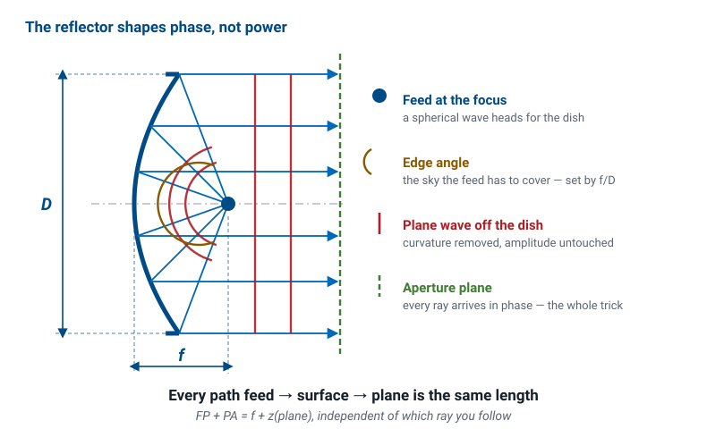
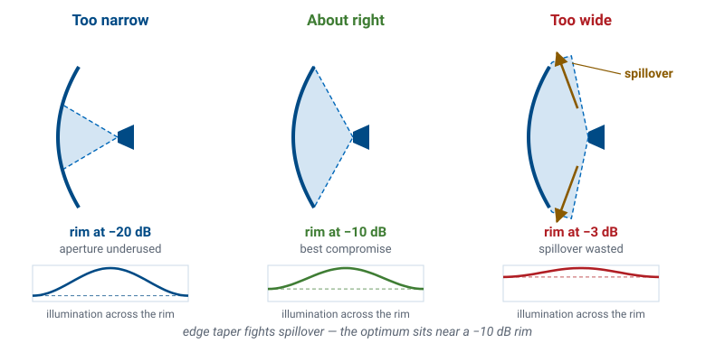
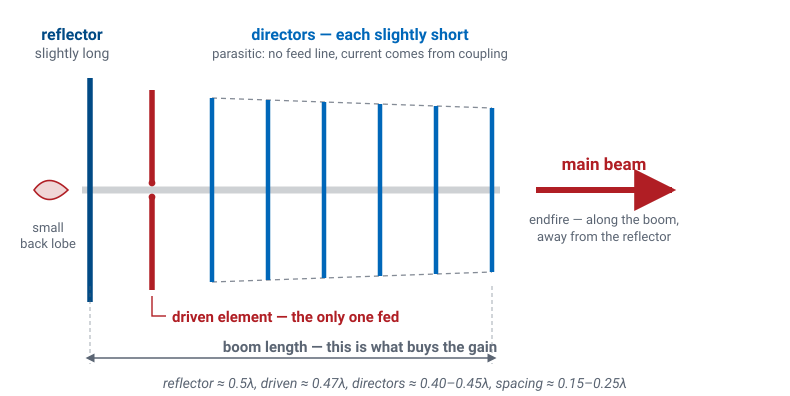

L14 - High-Gain Antennas#
High-Gain Antennas
High gain means a large radiating area driven in phase.
Lesson 14 · Antennas, Phased Arrays, and Radar Systems · Dr. Neil Rogers
Slides
Learning Objectives
- I can compute an aperture antenna's gain and beamwidth from its physical size, and explain why gain is fundamentally a statement about area.
- I can explain how a parabolic reflector's equal-path geometry turns a spherical wave into a plane wave, and identify what f/D, feed illumination, blockage, and spillover do to aperture efficiency.
- I can explain how a Yagi-Uda gets gain from parasitic elements, and how detuning the reflector and directors sets the phase that puts the beam endfire.
- I can describe the array as the third road to high gain, and state why the next module is devoted to it.
- I can select an appropriate high-gain antenna for a given application and defend the choice with numbers.
Where We Were
Lesson 13 topped out at 20 dBi: a handheld, a hop across the airfield.
Not a satellite at 36,000 km, or a target ten miles out.
Today: 20, 30, and 40 dBi, and the one idea under all three.
This is the last lesson in Module 2, and it closes the loop the module opened with. You can now predict an antenna’s pattern from its geometry, simulate it, and measure it with a quantified statement of how much of the measurement to believe. Everything today is a gain claim you already know how to check.
Where the Midterm Stands
Everyone is building a dipole, and it is due 2 Oct, 2359. Today is the last new material Module 2 puts in front of you.
Checkpoint, today. \(f_2\) chosen, \(Z_a(f_2)\) predicted in NEC, L-network designed on paper.
You measured a horn on the range in Lesson 11, and the dipole on your bench is the other end of the same scale. Everything today is a gain claim about an antenna tens of decibels above it, and that contrast is what makes the dipole’s \(2.15\ \text{dBi}\) a number rather than a disappointment: a gain figure only means something against a reference.
The selection framework at the end of this hour is not a project decision — the project antenna is settled. Read it as what it is, the reasoning an engineer has to show when the antenna is not settled, which is most of the time.
The One Idea
High gain means a large radiating area driven in phase.
An aperture is not big in meters. It is big in wavelengths.
Reflectors, Yagis, and arrays are three ways to buy the same thing: effective area in units of \(\lambda^2\).
Every high-gain antenna ever built is a different scheme for assembling a big, coherent aperture: a reflector borrows a mirror’s area, a Yagi borrows its neighbors’ currents, an array simply buys the area one element at a time. Read the physics before the algebra — \(A/\lambda^2\) counts how many square wavelengths the antenna spans, \(\eta_{\text{ap}}\) is the fraction of that area you actually manage to use, and \(A_e = \eta_{\text{ap}}A = G\lambda^2/4\pi\) is the number Friis cares about.
The Circular-Dish Shortcut
Every doubling of diameter buys 6 dB.
Every doubling of frequency buys 6 dB on the same dish.
For a circular dish, \(A = \pi D^2/4\) and the aperture formula collapses to the one you should memorize. The second consequence is why the satellite industry keeps climbing in frequency: the dish on the roof gets better for free every time the band moves up, until the surface tolerance catches up with it.
Beamwidth Comes From the Same Size
Double the dish: the beam halves and the gain climbs 6 dB.
Those are the same statement.
Lesson 6 established the Fourier logic: a wider aperture is a narrower beam, and the beamwidth of an aperture of size \(D\) scales as \(\lambda/D\). Power you no longer waste sideways is power you put on boresight.
The \(70^\circ\) coefficient already assumes a tapered illumination. A perfectly uniform circular aperture gives \(58^\circ\lambda/D\) with \(-17.6\) dB sidelobes, but nobody illuminates a dish uniformly — you will see why two parts from now. Use \(70^\circ\) for design, and use the interactive below to build the reflex.
Gain, Beamwidth, and Surface Error
Drive the sliders and watch two numbers move together. Set \(D/\lambda\) and the dish redraws with a tick on the rim for every wavelength across it, while the beam cone narrows on the same canvas. Notice that gain climbs 6 dB per doubling of \(D\) while the beam halves — and then open the surface-error slider and watch the amber curve: hold the panel tolerance fixed and grow the dish, and surface error quietly caps how far you can push it.
Worked Example — a 1 m Dish at 12 GHz
A home satellite-TV dish, roughly 1 m across, receiving Ku band at 12 GHz. Take \(\eta_{\text{ap}} = 0.65\).
Wavelength. \(\lambda = c/f = (3\times10^{8})/(12\times10^{9}) = 0.025\ \text{m}\), so \(D/\lambda = 40\) and the dish is forty wavelengths across.
Gain. \(G = 0.65\ (\pi \cdot 40)^{2} = 0.65 \cdot 15791 = 1.03\times10^{4}\), i.e. \(10\log_{10}(1.03\times10^{4}) = 40.1\ \text{dBi}\).
Beamwidth. \(\theta_\text{HP} \approx 70^\circ (0.025/1) = 1.75^\circ\). That is why a dish that drifts two degrees off the satellite goes dark.
Effective aperture. \(A_e = \eta_{\text{ap}}A = 0.65 \cdot \pi(0.5)^2 = 0.51\ \text{m}^2\).
Sanity check on the far field. \(2D^2/\lambda = 2(1)^2/0.025 = 80\ \text{m}\). You could not measure this antenna on the bench range you used in Lesson 11, and Lesson 9 told you why: it is the compact-range and near-field-scanning problem, in a dish you can carry under one arm.
The Parabolic Reflector
A reflector amplifies nothing.
It takes the spherical wave a small feed already radiates and rearranges its phase.
A large flat area then leaves the antenna in step.

The parabola is the surface that does this exactly, and Lesson 9’s compact range is the same geometry used indoors — there the collimated wave is aimed across a chamber instead of at a satellite.
The Equal-Path Property
The \(z_P\) cancels.
Every ray, edge to center, takes the same path length.
One line of algebra is the entire reason parabolic reflectors exist.
Put the vertex at the origin with the axis along \(z\), so the surface is \(z = \rho^{2}/4f\) and the focus sits at \(z = f\). A parabola’s defining property is that the distance from the focus to a point \(P\) on the surface equals \(f + z_P\); a ray from the focus to \(P\) then travels parallel to the axis to an aperture plane at \(z = z_a\), covering a further \(z_a - z_P\). Every point of the aperture plane is therefore in phase.
f/D Sets the Feed’s Job
\(f/D\) |
Edge half-angle |
Character |
|---|---|---|
0.25 |
\(90^\circ\) |
focus in the plane of the rim |
0.35 |
\(71^\circ\) |
deep, needs a broad feed |
0.50 |
\(53^\circ\) |
the common compromise |
0.60 |
\(45^\circ\) |
shallow, feed on a long strut |
The half-angle to the rim satisfies \(\tan(\theta_0/2) = 1/[4(f/D)]\).
A deep dish (small \(f/D\)) shields the feed from ground noise but demands a feed with an almost hemispherical pattern. A shallow dish is easy to illuminate cleanly but puts the feed far out on a wobbly strut. Most prime-focus reflectors land between 0.3 and 0.6.
Where the Efficiency Goes
\(\eta_{\text{ap}} \approx 0.55\) to \(0.7\) for a good reflector.
The missing 30 to 45% is four unavoidable trades, not sloppiness.
Knowing them separates picking a dish from designing one.
The first trade is the feed’s own pattern. Aim a narrow feed at the dish and the rim sits 20 dB down: you have paid for aperture you are not using, and the effective area shrinks. Widen the feed and the rim brightens — but now power sails past the rim entirely and is simply gone, and on receive that spilled beam is looking at warm ground instead of cold sky.
The 10 dB Rule

Illuminate the rim about 10 dB below the center. Taper loss and spillover pull opposite ways, and that is the optimum.
It is the house rule of thumb for reflector feeds, and it is why a dish’s aperture distribution always looks like one of the tapers from Lesson 6 — with the sidelobe benefit that comes along for free. A uniform aperture gives \(-13.3\) dB, but a real dish runs closer to \(-20\) dB because of the taper.
Blockage and the Offset Feed
A prime-focus feed and its struts sit squarely in the beam.
Blocking a diameter \(d\) costs roughly \([1-(d/D)^2]^2\) in gain, and raises sidelobes.
An offset feed cuts the reflector off-axis so the feed sits outside the beam.
On a 3 m dish a 15 cm feed is a rounding error. On a 45 cm consumer dish it is not, which is why the dish on the roof looks oval and has its arm hanging off the bottom: the reflector is a slice cut off-axis from a much larger imaginary paraboloid, giving zero blockage and cleaner sidelobes, and the tilted slice is what makes the panel look taller than it is wide.
Surface Accuracy — Ruze’s Formula
\(\lambda/50\) RMS costs 0.27 dB. Negligible.
\(\lambda/16\) RMS costs 2.7 dB. Disqualifying.
Phase errors from a bumpy surface cost gain exponentially, and this course uses the result without deriving it. Note what it means for a fixed piece of hardware: a dish held to 0.5 mm RMS is essentially perfect at 6 GHz and has thrown away 1.7 dB by 30 GHz. Big dishes at short wavelengths are a machining problem, not an electromagnetics problem.
The Efficiency Budget
Loss term |
Typical |
Why |
|---|---|---|
Spillover |
0.90 |
power past the rim |
Taper |
0.85 |
rim darker than center |
Blockage |
0.95 |
feed and struts |
Surface |
0.94 |
Ruze |
Everything else |
0.97 |
cross-pol, feed |
Product |
0.66 |
an ordinary reflector |
That product is where the \(\eta_{\text{ap}} \approx 0.65\) you have been assuming actually comes from. It is an accounting result, not a constant of nature, and every row of it is a design decision someone made.
The Yagi-Uda

The reflector buys area with a mirror. The Yagi buys it with the neighbors.
Exactly one element is fed. The rest are parasitic.
The driven element is a dipole near \(0.47\lambda\). Every other element has no feed line and no source — just a rod that the driven element’s near field induces a current on. That induced current re-radiates, and the total pattern is the superposition of all of them. There is nothing new physically: this is Lesson 6’s radiation integral with several current filaments instead of one.
Detuning Sets the Phase
A dipole slightly long is inductive; its current lags.
A dipole slightly short is capacitive; its current leads.
Reflector behind, long. Directors ahead, progressively shorter.
The reflector runs about \(0.5\lambda\) and sits behind the driven element, so by the time its radiation reaches the front of the antenna it adds in phase, while behind the antenna the two tend to cancel. The directors run around \(0.40\) to \(0.45\lambda\) and lead by just enough that the whole structure passes a slow traveling wave forward.
This course does not use mutual-impedance matrices. If you want the currents on the parasites exactly, you solve a coupled system with one row per element — that is what NEC did for you in Lesson 8. Here, the phenomenology is the point: long lags, short leads, and the beam goes toward the short end.
Boom Length Buys the Gain
Elements |
Boom |
Gain |
|---|---|---|
3 |
\(0.3\lambda\) |
7.5 dBi |
6 |
\(1.0\lambda\) |
10 dBi |
10 |
\(2.2\lambda\) |
12.5 dBi |
16 |
\(4.5\lambda\) |
14.5 dBi |
Roughly +3 dB per doubling of boom length.
The boom, not the element count, buys the gain.
The result is an endfire beam, main lobe along the boom and away from the reflector, with a front-to-back ratio of 15 to 25 dB. One reflector is essentially all you get, because the first already sees very little field behind it. Stuffing more directors into the same boom does almost nothing. Practical single Yagis live between 8 and 15 dBi; beyond that you stack several and let the stack act as an array.
Bandwidth Is What You Pay
Everything on a Yagi is a detuned resonator.
A few percent off design and the phases drift and the pattern degrades.
That is fine for a fixed-channel TV, amateur, or point-to-point link, which is where you find them, and a poor fit for anything wideband. It is also the easiest prediction in this lesson to check on the analyzer from Lesson 10.
The Third Road: Arrays
Build the aperture from \(N\) small antennas, fed coherently.
Sixteen patches buy 12 dB; sixty-four buy 18 dB.
The beam is not welded to the structure.
Change each element’s phase and it moves, in microseconds.
That capability is worth a module of its own, and it gets one. Module 3 develops the array factor, pattern multiplication, beam steering, grating lobes, and tapering, and you will steer a real beam on the ADALM-PHASER hardware. For today, file the array alongside the reflector and the Yagi as the third road to the same destination: coherent area.
Choosing: Five Questions
How much gain do I actually need? Run the link budget first.
What frequency?
How much bandwidth?
Does it have to move or steer?
What are the cost, size, weight, and wind load?
In that order, those five settle almost every real selection. Gain you do not need costs money and pointing accuracy. Aperture antennas get small and cheap as \(\lambda\) shrinks while wire antennas get fragile. Reflectors and horns are broadband; Yagis and patch arrays are not. A dish steers mechanically and slowly, an array electronically and instantly, a Yagi mostly not at all. And a 20 dBi antenna that cannot survive local wind and ice loading is not a usable answer.
Three Roads, Side by Side
Reflector |
Yagi |
Array |
|
|---|---|---|---|
Gain |
25–60 dBi |
8–15 dBi |
15–40 dBi |
Bandwidth |
wide |
a few % |
moderate |
Steering |
mechanical |
fixed |
electronic |
Profile |
bulky |
long boom |
flat panel |
Cost driver |
surface |
almost none |
one chain per element |
Worked Selection — 20 dBi at 2.4 GHz
You need a 20 dBi ground-station antenna at 2.4 GHz for a cubesat downlink. \(\lambda = 0.125\ \text{m}\), and \(G = 20\ \text{dBi} = 100\).
Required effective aperture. \(A_e = G\lambda^{2}/4\pi = 100(0.015625)/12.57 = 0.124\ \text{m}^{2}\). Every candidate has to deliver that much coherent area.
Dish. With \(\eta_{\text{ap}} = 0.6\), \(A = 0.124/0.6 = 0.207\ \text{m}^{2}\), so \(D = 2\sqrt{A/\pi} = 0.51\ \text{m}\). Beamwidth \(\theta_\text{HP} \approx 70^\circ(0.125/0.51) = 17^\circ\). A half-meter dish with a 17-degree beam is forgiving to point, cheap, and broadband, and no other candidate here matches it on all three.
Yagi. A single Yagi tops out near 15 dBi at a \(4.5\lambda\) (0.56 m) boom, so 20 dBi needs four stacked in a 2x2 bay: \(15 + 10\log_{10}4 = 21\ \text{dBi}\). It works, but it is four booms, a phasing harness, and a narrow band.
Patch array. At \(\lambda/2 = 6.25\ \text{cm}\) spacing with \(\eta_{\text{ap}} = 0.75\), a \(7\times7\) grid spans \(0.44\ \text{m}\) square, \(A = 0.191\ \text{m}^{2}\), giving \(G = 0.75(4\pi)(0.191)/0.015625 = 115 = 20.6\ \text{dBi}\). The panel is flat, presents low wind load, and can be made steerable later, at the price of a 49-way feed network.
Decision. For a fixed ground station on a rotator, take the 0.51 m dish: fewest parts, widest band, lowest cost. Choose the patch array instead the moment you need a flat profile or electronic steering.
Does the Link Close?
Against a \(-121\ \text{dBm}\) noise floor, that is 14 dB of margin.
Cubesat at 1000 km, 2 W transmitter (33.0 dBm) into a 0 dBi antenna, our 20 dBi dish on the ground, and a receiver noise floor of about \(-121\ \text{dBm}\) in a 100 kHz channel with a 3 dB noise figure. The link closes, and it closes because of the 20 dB the dish contributed. Take the dish away and you are 13 dB under the noise.
Summary
Idea |
What it says |
Number to hold onto |
|---|---|---|
\(G = \eta_{\text{ap}}4\pi A/\lambda^{2}\) |
gain is coherent area in square wavelengths |
\(\eta_{\text{ap}} \approx 0.55\)–\(0.7\) for reflectors |
\(G = \eta_{\text{ap}}(\pi D/\lambda)^{2}\) |
circular-dish shortcut |
+6 dB per doubling of \(D\) |
\(\theta_\text{HP} \approx 70^\circ\lambda/D\) |
beamwidth is set by size in wavelengths |
1 m at 12 GHz \(\rightarrow 1.75^\circ\) |
\(A_e = \eta_{\text{ap}}A = G\lambda^{2}/4\pi\) |
effective aperture — what Friis uses |
1 m dish at 12 GHz \(\rightarrow 0.51\ \text{m}^2\) |
\(f/D\) |
sets the edge angle the feed must cover |
0.3–0.6 typical; 0.5 \(\rightarrow 53^\circ\) |
Edge taper |
spillover fights illumination taper |
rim about \(-10\) dB |
Ruze, \(685.8(\sigma/\lambda)^{2}\) dB |
surface error costs gain exponentially |
\(\lambda/50 \rightarrow 0.27\) dB; \(\lambda/16 \rightarrow 2.7\) dB |
Yagi boom length |
boom, not element count, buys gain |
\(\approx +3\) dB per doubling; 8–15 dBi |
\(10\log_{10}N\) |
array gain over one element |
64 elements \(\rightarrow\) 18 dB |
Practice
Where This Is Going
Every gain number today was a claim, and you already know how to test one.
\(\eta_{\text{ap}} = 0.65\) was an assumption; \(70^\circ\lambda/D\) a rule of thumb.
Module 2 ends here. Module 3 takes the third road.
Module 2 closes with a complete loop: predict a pattern from geometry, simulate it, measure it, and state how much of the measurement to believe. Your midterm project is that loop run once more on the dipole, with your own measurements in place of somebody else’s numbers.
Lesson 15 opens Module 3 by going back to the beginning of that loop and asking a sharper question. The aperture size set the beamwidth; what set the sidelobe level? The answer is the illumination across the aperture — the \(-10\) dB edge taper you met today, generalized — and choosing it deliberately is how every high-performance antenna and phased array is designed. When you get there, remember what an array is doing: assembling the same coherent aperture a dish assembles with a mirror, one element and one phase shifter at a time.